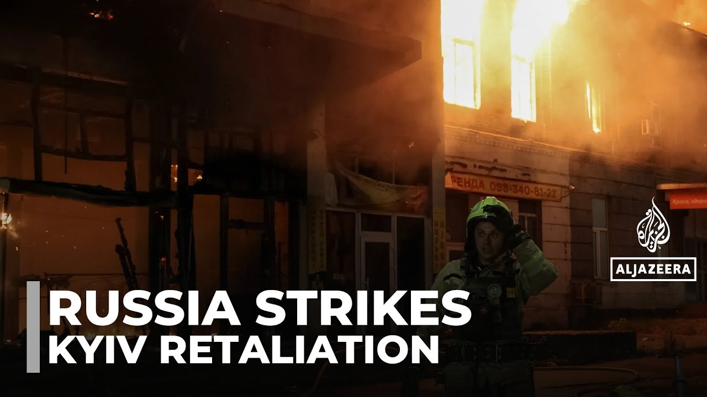

【俄罗斯袭击基辅：莫斯科称空袭是对“恐怖行为”的回应】
Summary: Air raid sirens blared in Kyiv as Ukraine intercepted drones and missiles, but debris damaged buildings. Russia also targeted western Ukrainian cities, while Ukraine struck a Russian airbase.
摘要： 基辅空袭警报响起，乌克兰拦截无人机和导弹，但碎片损坏了建筑物。俄罗斯还袭击了乌克兰西部城市，而乌克兰则打击了俄罗斯空军基地。

⏱️ Estimated Reading Time: 2 min
📚 高考3500生词 📚 雅思生词 📚 托福生词 📚 GRE生词 📚 UP主推荐生词
Air raid sirens blaring across the Ukrainian capital.
空袭警报在乌克兰首都响起。
Kiev's air defense units fire into the night [Music] sky.
基辅的防空部队向夜空开火。
The terrifying sound as a drone approaches and [Music] explodes.
无人机逼近并爆炸的恐怖声音。
Ukraine's military says it shot down the majority of the more than 450 drones and missiles.
乌克兰军方称击落了超过450架无人机和导弹中的大部分。
But debris from some of the interceptions slammed into residential buildings and civilian infrastructure.
但部分拦截的碎片击中了居民楼和民用基础设施。
We were at the underground parking when we heard a strong explosion.
我们在地下停车场时听到了一声巨大的爆炸。
People ran out to see what happened.
人们跑出去看发生了什么。
The firefighters and an ambulance arrived.
消防员和一辆救护车赶到了。
Then missiles started coming.
然后导弹开始袭来。
Thanks God our firefighters, even under such conditions, were helping people.
感谢上帝，我们的消防员即使在这样条件下也在帮助人们。
At my apartment, all the windows were blown out.
我公寓的所有窗户都被炸飞了。
It's horrible.
太可怕了。
Russia also targeted the cities of Lutk and Tyrannopil in the west of Ukraine.
俄罗斯还袭击了乌克兰西部的卢茨克和泰兰诺皮尔市。
And while Russia attacked, Ukraine did the same.
在俄罗斯发动袭击的同时，乌克兰也采取了行动。
The Ukrainian military said it hit fuel depots at a Russian air base in the Saratov region around 600 km across the border.
乌克兰军方称其打击了边境约600公里处萨拉托夫地区俄罗斯空军基地的燃料库。
The attacks come just days after Ukraine launched a wave of drone strikes deep inside Russia, destroying what the Ukrainian authorities say were around 40 Russian aircraft.
此次袭击发生前几天，乌克兰对俄罗斯境内发动了一波无人机袭击，乌克兰当局称摧毁了约40架俄罗斯飞机。
Russian President Vladimir Putin vowed to respond with virtually no sign of progress after two rounds of peace talks in Istanbul.
俄罗斯总统弗拉基米尔·普京誓言要做出回应，此前在伊斯坦布尔举行的两轮和平谈判几乎没有进展。
Last night's bombardment was one of the most intense in recent weeks.
昨晚的轰炸是近几周来最猛烈的一次。
John Straford, Al Jazer, Kev.
约翰·斯特拉福德，半岛电视台，基辅。
Make sure to subscribe to our channel to get the latest news from Alazer.
请订阅我们的频道以获取半岛电视台的最新消息。